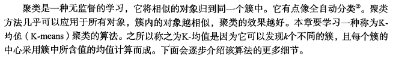

K-均值聚类算法为未标注数据分组

使用后处理来提高聚类性能


示例：对地图上的点进行聚类
使用Apriori算法进行关联分析
关联分析(发现频繁项集，找到关联规则)


频繁的定义：是支持度和可信度
一个项集的支持度(support)被定义为数据集中包含该项集的记录所占的比例。从图11-1中
可以得到，{豆奶}的支持度为4/5。而在5条交易记录中有3条包含{豆奶，尿布} , 因此{豆奶，尿
布}的支持度为3/5。支持度是针对项集来说的，因此可以定义一个最小支持度，而只保留满足最
小支持度的项集。
可信度或置信度（confidence)是针对一条诸如{尿布} ^ 丨葡萄酒}的关联规则来定义的。这
条规则的可信度被定义为“支持度({尿布，葡萄酒})/支持度({尿布})”。从图11-1中可以看到，由于{尿布，葡萄酒}的支持度为3/5,尿布的支持度为4/5,所以“尿布— 葡萄酒”的可信度为3/4=0.75。这意味着对于包含“尿布”的所有记录，我们的规则对其中7 5 %的记录都适用。
支持度和可信度是用来量化关联分析是否成功的方法。
Apriori原理
Apriori原理可以帮我们减少可能感兴趣的项集。
Apriori原理是说如果某个项集是频繁的，那么它的所有子集也是频繁的。
对于图11-2给出的例子，这意味着如果{0，1}是频繁的，那么{0}、{1}也一定是频繁的。这个原理
直观上并没有什么帮助，但是如果反过来看就有用了，也就是说如果一个项集是非频繁集，那么它的所有超集也是非频繁的。

使用Apriori算法来发现频繁集
参数：最小支持度，数据集
首先会生成所有单个物品的项集列表，查看哪些项集满足最小支持度要求，不满足的除去，剩下的项两两组合，检查、三三组合、检查。
从频繁项集中挖掘关联规则

示例：发现国会投票中的模式
示例：发现毒蘑菇的相似特征
使用FP-growth算法来高效发现频繁项集
FP-growth发现频繁项集的基本过程：
- 构建FP树
- 从FP树中挖掘频繁项集
FP树：用于编码数据集的有效方式

同搜索树不同的是，一个元素项可以在一棵FP树中出现多次。FP树会存储项集的出现频率，
而每个项集会以路径的方式存储在树中。存在相似元素的集合会共享树的一部分。只有当集合之
间完全不同时，树才会分叉。树节点上给出集合中的单个元素及其在序列中的出现次数，路径
会给出该序列的出现次数。
相似项之间的链接即节点链接(node link),用于快速发现相似项的位置。表12-1给出了用于生成图12-1中所示FP树的数据。

在Twitter源中发现一些共现词
从新闻网站点击流中挖掘